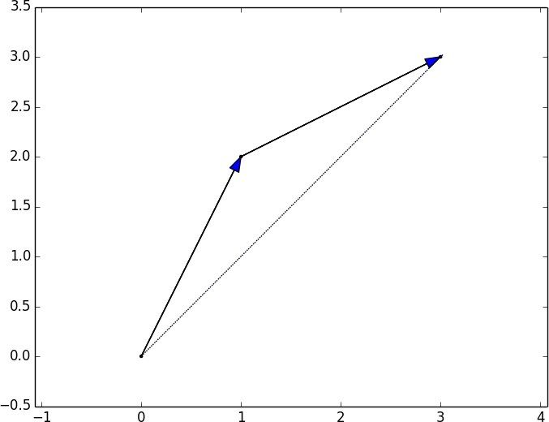
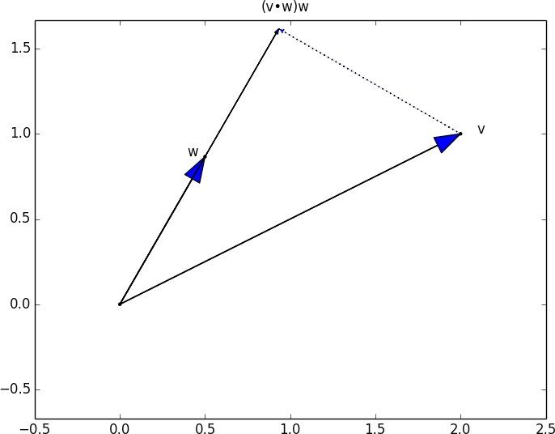
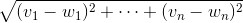

4.1 向量
抽象地说，向量 是指可以加总（以生成新的向量），可以乘以标量 （即数字），也可以生成新的向量的对象。
具体来说（对我们而言），向量是有限维空间的点。即使你本无意视你的数据为向量，将数值数据表示为向量也是非常好的处理方式。
比如，如果你有很多人的身高、体重、年龄数据，就可以把数据记为三维向量 (height, weight, age) 。如果你教的一个班有四门考试，就可以把学生成绩记为四维向量 (exam1, exam2, exam3, exam4) 。
最简单的入门方法是将向量表示为数字的列表。一个包含三个数字的列表对应一个三维空间的向量，反之亦然：
height_weight_age = [70, # 英寸
170, # 磅
40 ] # 岁
grades = [95, # 考试1
80, # 考试2
75, # 考试3
62 ] # 考试4
这种方式的一个问题在于向量算法 的应用。由于 Python 中的列表不同于向量（因此无法直接对向量运算），我们需要自己提前构建相应算法工具。现在就开始构建吧！
首先，我们常常需要对两个向量做加法。向量以分量方式 （componentwise）做运算。这意味着，如果两个向量 v 和 w 长度相同，那它们的和就是一个新的向量，其中向量的第一个元素等于 v[0] + w[0] ，第二个元素等于 v[1] + w[1] ，以此类推。（如果两个向量长度不同，则不能相加。）
例如，向量 [1, 2] 加上向量 [2, 1] 等于 [1 + 2, 2 + 1] 或 [3, 3] ，如图 4-1 所示。

图 4-1：两个向量相加
我们可以很容易地实现这个功能：对向量调用 zip 函数，同时用列表解析使向量的相应元素相加：
def vector_add(v, w):
"""adds corresponding elements"""
return [v_i + w_i
for v_i, w_i in zip(v, w)]
同样，对两个向量做减法，只需要使向量的相应元素相减：
def vector_subtract(v, w):
"""subtracts corresponding elements"""
return [v_i - w_i
for v_i, w_i in zip(v, w)]
有时，我们需要对一系列向量做加法。即生成一个新向量，其第一个元素是这一系列向量第一个元素的和，第二个元素是这一系列向量第二个元素的和，以此类推。最简单的方法是每次递加一个向量：
def vector_sum(vectors):
"""sums all corresponding elements"""
result = vectors[0] # 从第一个向量开始
for vector in vectors[1:]: # 之后遍历其他向量
result = vector_add(result, vector) # 最后计入总和
return result
当你思考这个解决方法时，我们正通过 vector_add 函数，即使用 reduce 的方式来加总这一系列的向量。换句话说，我们用高级的函数更加简洁地实现了这个功能：
def vector_sum(vectors):
return reduce(vector_add, vectors)
或者：
vector_sum = partial(reduce, vector_add)
这最后一种方法很简洁、巧妙，但可能相比之下没有前几种有用处。
当然，我们有时也需要给一个向量乘以一个标量，这时只需将向量的每个元素乘以那个数字：
def scalar_multiply(c, v):
"""c is a number, v is a vector"""
return [c * v_i for v_i in v]
我们也可以计算一系列向量（长度相同）的均值：
def vector_mean(vectors):
"""compute the vector whose ith element is the mean of the
ith elements of the input vectors"""
n = len(vectors)
return scalar_multiply(1/n, vector_sum(vectors))
一个不常见的功能是点乘 （dot product）。两个向量的点乘表示对应元素的分量乘积之和：
def dot(v, w):
"""v_1 * w_1 + ... + v_n * w_n"""
return sum(v_i * w_i
for v_i, w_i in zip(v, w))
点乘衡量了向量 v 在向量 w 方向延伸的程度。例如，如果 w=[1, 0] ，则 dot(v, w) 就是 v 的第一个元素。点乘的另一个解释是将 v 在 w 上投影 所得到的向量的长度（如图 4-2）：

图 4-2：点乘即向量投影
通过点乘很容易计算一个向量的平方和：
def sum_of_squares(v):
"""v_1 * v_1 + ... + v_n * v_n"""
return dot(v, v)
可以用来计算向量的大小 （或长度）：
import math
def magnitude(v):
return math.sqrt(sum_of_squares(v)) # math.sqrt是平方根函数
现在，我们得到了为计算两个向量的距离所需要的所有部分，定义如下：

def squared_distance(v, w):
"""(v_1 - w_1) ** 2 + ... + (v_n - w_n) ** 2"""
return sum_of_squares(vector_subtract(v, w))
def distance(v, w):
return math.sqrt(squared_distance(v, w))
写成下式（与上式等价）更清晰：
def distance(v, w):
return magnitude(vector_subtract(v, w))
有了这些关于向量的概念和计算，我们就可以开始探讨数据科学了。本书后续部分会大量使用这些概念。
用列表来表示向量很有利于概念阐释，但对性能却影响很糟。
实际编程中，你需要使用 NumPy 库。这个库中有包含各种算法操作的高性能数组类。